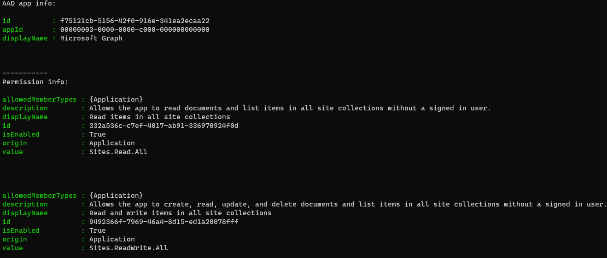

Get Azure AD app permission info (delegated or application)
Summary
When creating or interpreting an Azure AD (AAD) app manifest or even to get existing permissions for a Microsoft app, you would like to have info about them, such as the resource id or if the permission requires admin consent. This script can be useful, because if you have permission name (or a piece of it) and the permission type (user or application context), it's enough to get the info you want!

By default, the script has only registered Microsoft Graph and SharePoint Online Microsoft AAD apps (with their respective appId property). Feel free to add any other API listed here in the AadApis class!
# User Input
$api = "Microsoft Graph" # Or "SharePoint"
$permission = "Sites.Read.All" # Can be "Read" if seeking more permissions
# Connect to Microsoft 365
if ($(m365 status) -match "Logged Out") {
m365 login
}
# Configure the CLI to output as JSON on each execution
$m365output = m365 cli config get --key output
if ($m365output -notmatch "json") {
m365 cli config set --key output --value json
}
# Get CLI commands JSON output converted as objects
function Get-CLIValue {
[cmdletbinding()]
param(
[parameter(Mandatory = $true, ValueFromPipeline = $true)]
$input
)
$output = $input | ConvertFrom-Json
if ($null -ne $output.error) {
throw $output.error
}
return $output
}
# Dedicated class to store Azure AD (AAD) Enterprise Microsoft Apps as valid param inputs
class AadApis : System.Management.Automation.IValidateSetValuesGenerator {
[String[]] GetValidValues() {
$Global:aadApis = @{
"SharePoint" = "00000003-0000-0ff1-ce00-000000000000"
"Microsoft Graph" = "00000003-0000-0000-c000-000000000000"
}
return ($Global:aadApis).Keys
}
}
# Method to get delegated or application permissions from a registered AAD MS App, based on name
function Get-AADPermission {
[cmdletbinding()]
param(
[parameter(Mandatory)]
[ValidateSet([AadApis], IgnoreCase = $false)]
$ApiName,
[parameter(Mandatory)]
$PermissionName,
[parameter(Mandatory = $false)]
[Switch]$Delegated,
[parameter(Mandatory = $false)]
[Switch]$Application
)
try {
$sp = m365 aad sp get --appId ($Global:aadApis)[$ApiName] | Get-CLIValue
if ($Delegated) {
$permissionsInfo = $sp.oauth2PermissionScopes | Where-Object { $_.value -match $PermissionName }
}
elseif ($Application) {
$permissionsInfo = $sp.appRoles | Where-Object { $_.value -match $PermissionName }
}
else {
throw "Please define if seeked permission is a delegated (-Scope) or an application (-Role) one"
}
if ($permissionsInfo) {
Write-Host "AAD app info:"
Write-Host ($sp | Select-Object id, appId, displayName | Format-List | Out-String)
Write-Host "-----------"
Write-Host "Permissions info:"
foreach ($perm in $permissionsInfo) {
Write-Host ($perm | Format-List | Out-String)
}
}
else {
$permissionType = (&{If($Delegated -eq $true) {"Delegated"} Else {"Application"}})
Write-Warning "No $($permissionType) permission named [$($PermissionName)] found for $($ApiName) App"
}
}
catch {
Write-Error $_.Exception
}
}
# Run the command
Get-AADPermission -ApiName $api -PermissionName $permission -Application
Check out the CLI for Microsoft 365 to learn more at: https://aka.ms/cli-m365
Contributors
| Author(s) |
|---|
| Michaël Maillot |
Disclaimer
THESE SAMPLES ARE PROVIDED AS IS WITHOUT WARRANTY OF ANY KIND, EITHER EXPRESS OR IMPLIED, INCLUDING ANY IMPLIED WARRANTIES OF FITNESS FOR A PARTICULAR PURPOSE, MERCHANTABILITY, OR NON-INFRINGEMENT.